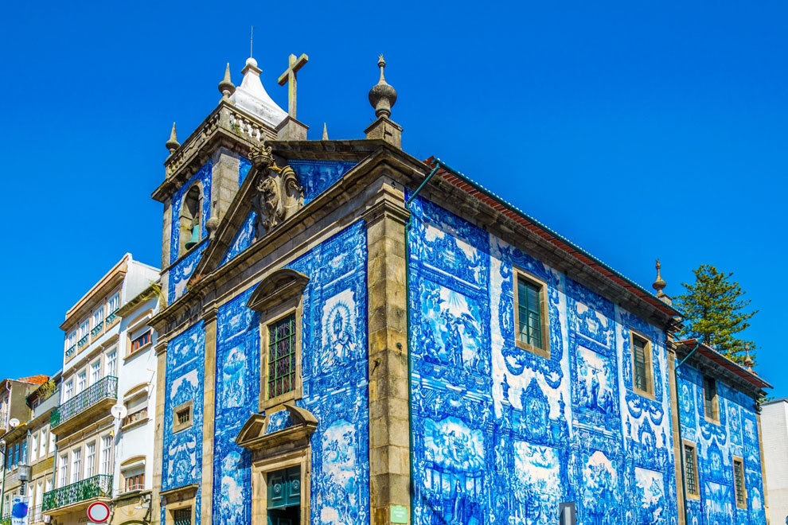

A cultura portuguesa é rica e diversificada, refletindo a história do país e sua influência global através dos séculos. Seus aspectos são importantes da cultura portuguesa, incluindo língua, gastronomia e música:
Língua Portuguesa:
- A língua portuguesa é uma das principais heranças culturais de Portugal. É uma das línguas mais faladas no mundo, com Portugal sendo o berço do idioma. Além de Portugal, o português é a língua oficial em países como Brasil, Angola, Moçambique, Cabo Verde e outras nações, formando a Comunidade dos Países de Língua Portuguesa (CPLP).
Gastronomia Portuguesa:
- A culinária portuguesa é conhecida pela sua diversidade e sabor único. Pratos tradicionais incluem o famoso bacalhau, pastéis de nata (um tipo de pastel de creme), caldo verde (sopa de couve e batata), arroz de marisco (arroz de frutos do mar), e o cozido à portuguesa (um cozido de carne e legumes). Portugal também é famoso por seus vinhos, como o vinho do Porto e os vinhos produzidos no Douro e no Alentejo.
Fado:
- Portugal tem uma rica tradição artística e literária. Escritores como Fernando Pessoa e José Saramago são mundialmente reconhecidos. A azulejaria, uma forma de arte com azulejos cerâmicos decorados, é uma característica distintiva da arquitetura portuguesa.
Arte e Literatura:
- Portugal tem uma rica tradição artística e literária. Escritores como Fernando Pessoa e José Saramago são mundialmente reconhecidos. A azulejaria, uma forma de arte com azulejos cerâmicos decorados, é uma característica distintiva da arquitetura portuguesa.
Festas e Festivais:
- Portugal é conhecido por suas festas tradicionais, como as Festas de São João no Porto e o Carnaval de Lisboa. O Festival de Fado, realizado anualmente, celebra este gênero musical icônico.
Esporte:
- O futebol é o esporte mais popular em Portugal, com clubes como o Sport Lisboa e Benfica e o Futebol Clube do Porto conquistando sucesso nacional e internacional. O país também é famoso pelo Rally de Portugal, uma etapa do Campeonato Mundial de Rali.
Arquitetura:
- A arquitetura de Portugal é diversificada, com influências que vão desde o românico até o barroco e o estilo manuelino, que é uma mistura de gótico e renascentista. Destacam-se monumentos como a Torre de Belém em Lisboa e o Mosteiro da Batalha.
